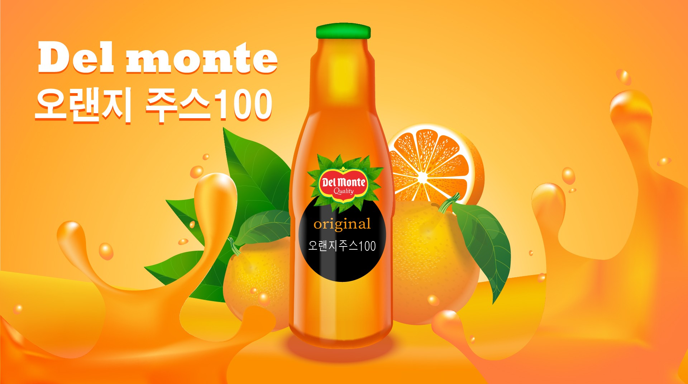

１학년 １학기 기말과제로 만든 과제
지금까지 배운 일러스트 툴들을 활용하여 본인이 광고하고 싶은 제품을 선정하여 광고 포스터를 만드는 최종과제 오렌지주스를 주제로 선정하고 상큼하고 시원한 느낌을 주기위해 주스 물방물이 튀어오르는 것을 표현하고 오렌지주스 뒤에 진짜 오렌지를 배치하여 오렌지주스의 느낌을 더욱 살렸다
Adobe liiustrater

지금까지 배운 일러스트 툴들을 활용하여 본인이 광고하고 싶은 제품을 선정하여 광고 포스터를 만드는 최종과제 오렌지주스를 주제로 선정하고 상큼하고 시원한 느낌을 주기위해 주스 물방물이 튀어오르는 것을 표현하고 오렌지주스 뒤에 진짜 오렌지를 배치하여 오렌지주스의 느낌을 더욱 살렸다
Adobe liiustrater